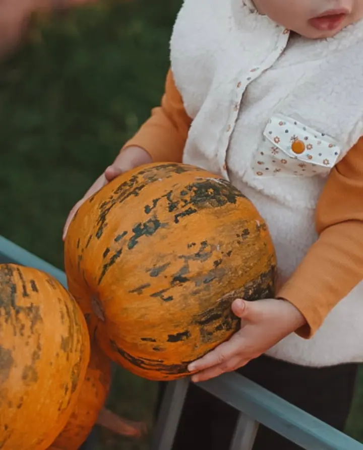
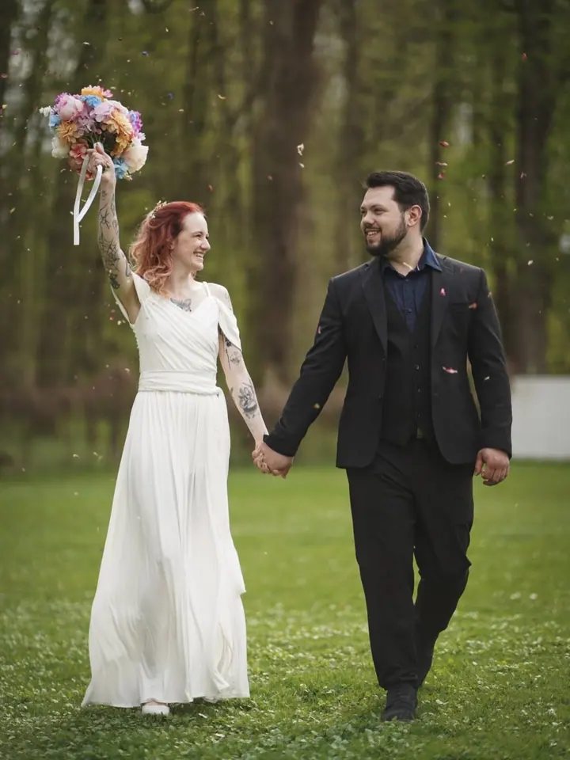
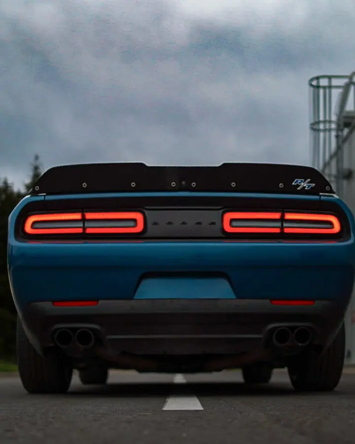
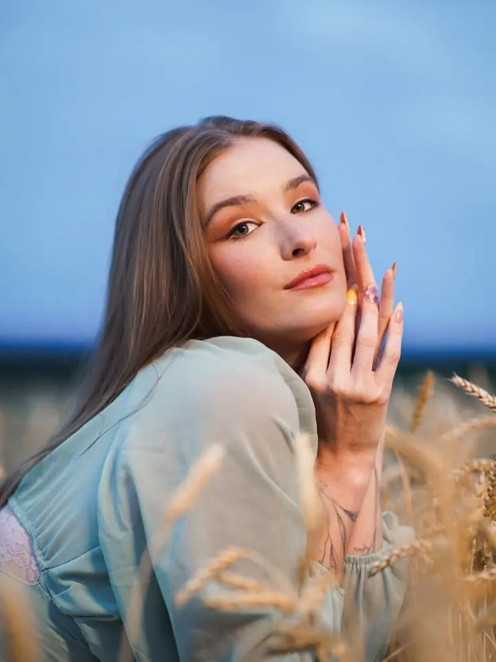
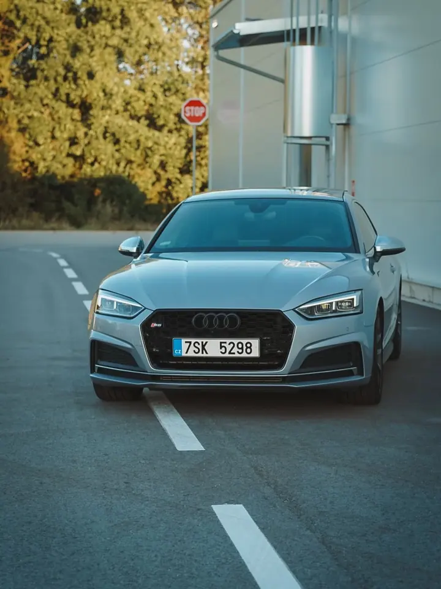
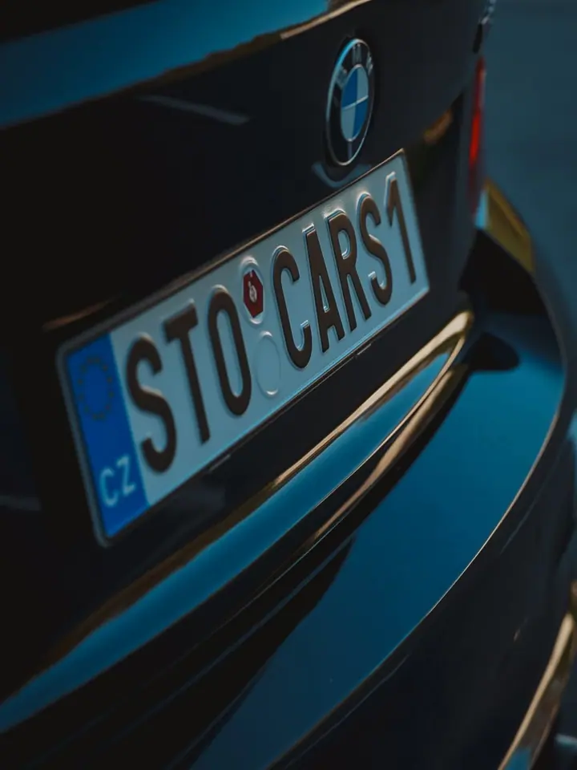
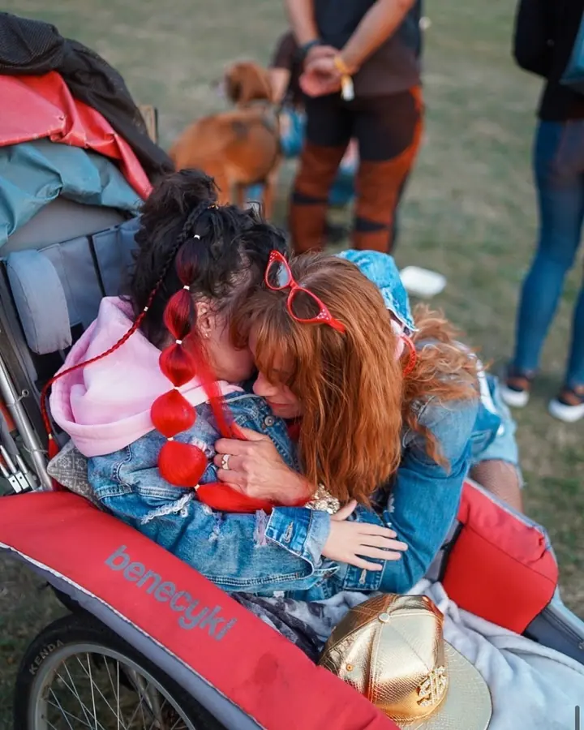

01 / 04
Rodinné focení
Fotím opravdové momenty mezi vámi: smích, blízkost i drobnosti, které dělají vaše vztahy jedinečnými. Bez nucených póz, abyste se cítili sami sebou.
Zeptat se na termín→






Rodiny, svatby a přirozené momenty
Zeptat se na termín →(01) Ahoj
Jmenuji se Denisa Pavouková a fotím rodiny , novorozence, portréty i svatby v Jindřichově Hradci a okolí. Jsem máma malého Thea a fotím přirozeně, bez strojenosti.
651lidí sleduje mou práci na Instagramu
372příspěvků s fotkami a příběhy
(02) Co dělám
01 / 04
Fotím opravdové momenty mezi vámi: smích, blízkost i drobnosti, které dělají vaše vztahy jedinečnými. Bez nucených póz, abyste se cítili sami sebou.
Zeptat se na termín→02 / 04
Svatby jsou směr, kterému se chci naplno věnovat. Podle balíčku vás fotím 2 až 8 hodin a u největšího balíčku je předsvatební focení zdarma.
Zeptat se na termín→Dále nabízím
(04) Postup
Od první zprávy po hotovou galerii.
Krok 1 z 4
Stačí pár slov o tom, co si přejete zachytit. Ozvu se vám co nejdříve.
Krok 2 z 4
Společně vybereme balíček a doladíme místo i detaily. Každé focení se dá přizpůsobit na míru.
Krok 3 z 4
Fotíme bez nucených póz a bez tlaku na dokonalost, abyste se cítili uvolněně a sami sebou.
Krok 4 z 4
Dostanete upravené fotky v digitální podobě, jejich počet záleží na balíčku. Pokud chcete, objednáte si fotoplátna za zvýhodněnou cenu.
Nejkrásnější vzpomínky vznikají, když jste sami sebou.
(05) Za objektivem
Jsem fotografka a máma malého Thea. Tyhle dvě role se v mé tvorbě přirozeně propojují. Největší inspirací je pro mě můj syn, díky kterému vidím krásu v každodenních maličkostech.
Fotka je pro mě způsob, jak zachytit opravdové emoce, které jinak rychle zmizí. Věřím, že nejkrásnější vzpomínky vznikají, když jsou lidé sami sebou. Proto vás nebudu stavět do strojených póz a nechám prostor smíchu, pohybu i tichým chvílím.
Specializuji se na novorozence, rodiny a lifestyle focení. Svatby jsou směr, kterému se chci naplno věnovat. Ke svým fotkám přidávám i záběry z dronu, které ukážou atmosféru místa z ptačí perspektivy.
Denisa
Denisa Pavouková · Rodinná a lifestyle fotografka
Mini balíček stojí 800 Kč (20 až 30 minut, 7 upravených fotek), Základní 1200 Kč (45 až 60 minut, 8 až 12 fotek) a Standard / novorozenecké 1600 Kč (60 až 90 minut, 12 až 16 fotek).
Mini za 2490 Kč (2 hodiny, cca 200 fotek), Střední za 5700 Kč (až 5 hodin, cca 400 fotek) a Velký za 9000 Kč (až 8 hodin, cca 600 fotek). K Velkému balíčku je předsvatební focení zdarma.
Ano. Při svatbě, rodinném i lifestyle focení můžu fotit a natáčet dronem, aby vznikly záběry z jiné perspektivy.
Určitě. Každé focení přizpůsobuji vám i prostředí, stačí mi napsat, co si představujete.
(07) Kontakt
Napište pár vět o tom, co si představujete, a termín, který se vám hodí.
denisapavoukova@seznam.cz